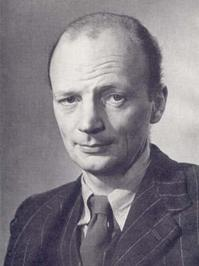

Saturday, January the 2nd, 2010
back to: title, date or indexes
“The initials stood for ‘Present Question’. PQ was essentially a conference-holding organisation, devoted to the idea of synthesis… The distinguished lecturers were not themselves psychologists. They had their own terminologies, historical, anthropological, religious, scientific, literary, artistic, political. Their views were the opposites to be reconciled… Then there was ‘wholeness' and ‘becoming a person’, but otherwise not much Jungian undertow, certainly not enough to bother me. With the whole idea of the thing, I was intellectually uninvolved. It was simply that every now and then I would get on a train to Oxford and spend a week gassing with distinguished chaps, many of them amusing. Most of the time, my interests lay decidedly elsewhere. Only later did I begin to think of Jung as perhaps the most pernicious brain-softener of our time.” —Rayner Heppenstall, The Intellectual Part (1963)
Heppenstall (1911–81) was an interesting character. In addition to writing novels, memoirs and criticism, he was an early English enthusiast—and translator—of Raymond Roussel. There is an essay about him by G J Buckell here, which points out that he is forgotten and out of print, and suggests one reason for the neglect is that he grew increasingly reactionary with age. Buckell says the last novel, The Pier, is “an uncomfortable diatribe… indicative… of a psychological collapse”. On the contrary, it is a small masterpiece. It is not clear to me why the espousal of reactionary views is, in and of itself, evidence of mental instability.
Here is Heppenstall in fine form, again from The Intellectual Part:
“It had, as a matter of fact, been on starting to read a poem by T S Eliot that I first questioned the good sense of writing poems at all. That had been in the autumn of 1940… A copy of The New English Weekly had come in the post. It contained a long new poem, East Coker, by T S Eliot. I turned to the poem with some eagerness. It began:
In my beginning is my end…
“I flung the paper across the room. It was like a signature tune. The poem might just as well have begun:
This is T S Eliot speaking…
In due course, I picked up the paper and read the rest and no doubt liked some of it, as I do now. It is not, after all, in that poem that Mr Eliot bids us so oddly to pray for fishmongers.”

Rayner Heppenstall
ADDENDUM : Speaking of prayers for fishmongers, Eliot may have been thinking of this.